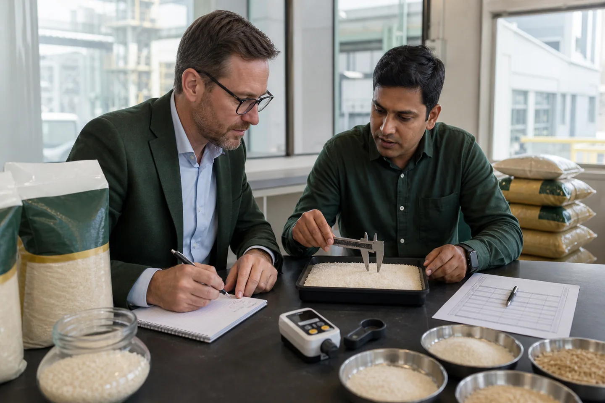
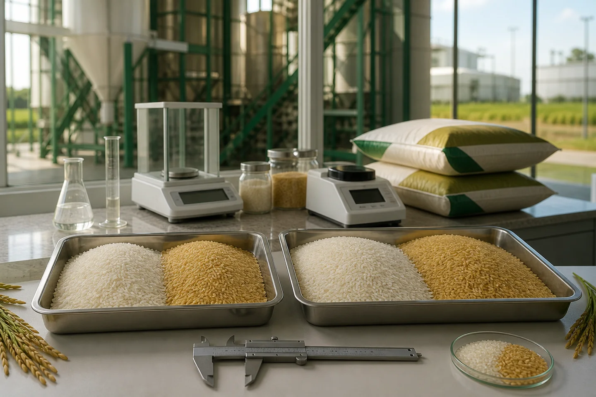
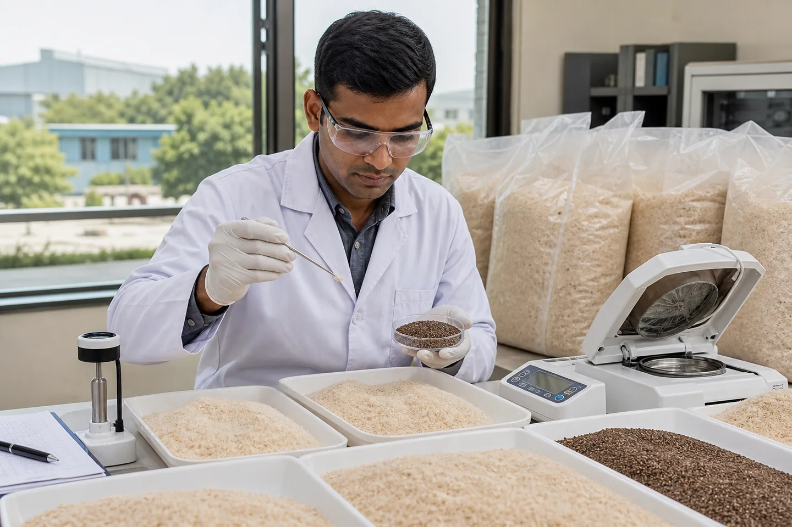

Аналитика рынка и
Торговая информация
Подробные руководства, анализ рынка и обновления нормативной базы для международных покупателей индийской сельскохозяйственной продукции, написанные экспортной командой JFT Agro.

Рис басмати 1121 против 1509: какой сорт следует импортировать в 2026 году?
Два сорта доминируют в экспорте индийского басмати во всем мире. Оба длиннозернистые, ароматные и премиум-класса, но они предназначены для разных рынков, разных покупателей и разных ценовых категорий. Вот что вам нужно знать, прежде чем размещать заказ на контейнер.

Контрольный список проверки загрузки пищевых контейнеров для импортеров агропродукции
Контрольный список контейнеров для предварительной загрузки риса, специй, бобовых и зерновых, включающий чистоту, сухость, запах, наличие вредителей, упаковку, записи о загрузке, печати и VGM.

Как просмотреть сертификат анализа импорта продуктов питания
Узнайте, как просмотреть сертификат анализа пищевых продуктов: идентичность партии, отбор проб, методы, единицы измерения, пределы, лабораторный объем и средства контроля, выходящие за рамки спецификации.

Как написать спецификацию на закупку агротоваров
Практичный шаблон для покупателя риса, специй, бобовых и зерновых, включающий сорт, допуски, испытания, упаковку, отбор проб, документы и правила приемки.

Как экспортировать товары из Индии в Африку: полное руководство с документами, условиями оплаты и бесплатными шаблонами
Пошаговое руководство по экспорту из Индии в Африку — все необходимые документы, условия оплаты, требования конкретных стран для Нигерии, Кении, Ганы, Танзании, а также бесплатно загружаемые шаблоны счетов-проформ, коммерческих счетов-фактур и упаковочных листов...

Экспорт индийских пальцев с куркумой в 2026 году: Салем против Низамабада, сорта и цены
Индия выращивает 75% всей куркумы в мире. Сорта Салема и Низамабада, характеристики куркумина и контрольные показатели FOB 2026 года…

Red Chilli Export India 2026: Teja S17, сорта Guntur и цены на условиях FOB
Teja S17, Guntur Sannam или Bydagi — какой класс подходит для вашего рынка? Приборы Сковилла, цвет ASTA и испытания суданских красителей...

Экспорт зеленой фасоли мунг в Индию, 2026 г.: сорта, размеры и руководство для покупателя
Сорт жирного прорастания против мелкого кулинарного сорта. Тестирование всхожести, цены на условиях FOB 2026 г., рынки Китая и Южной Кореи...

Пропаренный рис IR-64 на экспорт: сорта, рынки и цены FOB 2026 г.
IR-64 сломан на 5% против 25% — то, чего на самом деле хотят покупатели из Западной Африки, Персидского залива и Юго-Восточной Азии. Стандарты фрезерования и контрольные показатели FOB 2026 г....
Как импортировать индийский рис в Нигерию и Западную Африку: полное руководство
Требования формы M, регистрация NAFDAC, проверка SGS, реэкспортный центр Котону — полное руководство по импорту в Нигерию/Западную Африку...

Экспорт индийского риса в Шри-Ланку и Бангладеш: условия и логистика
Преимущество короткого морского пути (3–6 дней), предпочтительные сорта в зависимости от страны, одобрение BSTI и руководство по условиям оплаты...

Импорт индийской сельскохозяйственной продукции в Кению и Восточную Африку: обязанности и документы
Тариф на рис EAC 75%, сертификат KEBS PVoC, время стоянки в порту Момбасы и расчет стоимости доставки...

Как читать индийский экспортный счет-проформу: полное руководство
Объяснен каждый раздел PI — описание продукта, коды HS, красные флажки с банковскими реквизитами и разница между PI и коммерческим счетом...

Импортная пошлина на индийский рис в 2026 году: справочник по тарифам для разных стран
Тарифные ставки для ОАЭ (0% CEPA), Великобритании (0% DCTS), Кении (75%), Нигерии (110%), ЕС, Бангладеш — с примером расчета стоимости доставки...

Объяснение регистрации APEDA: что это значит для импортеров
APEDA RCMC против IEC, как проверить онлайн, сертификат BREAC для басмати и почему APEDA = не может экспортировать рис из Индии...
Сторонняя инспекция SGS индийского агроэкспорта: как это работает
Что SGS проверяет при погрузке, на что она не распространяется, как указать это в контракте и как читать сертификат...

Аккредитив на импорт продуктов питания из Индии: пошаговое руководство
8-этапный процесс аккредитива, вид, использование и подтвержденный аккредитив, наиболее распространенные несоответствия в торговле агро аккредитивами и ключевые советы по составлению...

Объяснение коносамента: руководство для начинающих импортеров из Индии
Три функции коносамента: первоначальный выпуск по сравнению с выпуском по телексу, чистый и оговоренный выпуск коносамента, и как его использовать для таможенного оформления...

Индия против таиландского риса, 2026 год: что лучше для вашего рынка?
Сравнение сортов, ценовой разрыв в 2026 году (50–80 долларов США за тонну), различия в качестве и то, какое происхождение соответствует тому или иному рынку назначения...

Топ-10 индийских сельскохозяйственных товаров, которые будут импортированы в 2026 году
От басмати и псиллиума до моринги и тоор дал — 10 товаров с лучшим ценовым преимуществом, ростом спроса и легкостью поиска...

Как выбрать надежного индийского экспортера агропродукции: контрольный список покупателя
Прежде чем что-либо платить, проверьте IEC, APEDA, GSTIN, MCA онлайн, а также 6 красных флажков, которые сигнализируют о поставщике с высоким уровнем риска...

Экспорт шелухи подорожника из Индии в 2026 году: сорта, цены и руководство для покупателя
Индия контролирует 85% мировых поставок псиллиума. В этом руководстве описаны все сорта от 85% до 99%, базовые цены на условиях FOB 2026 года, основные характеристики и способы поставок напрямую от проверенного индийского экспортера...
Прогноз цен на индийский тмин (джира) на 2026 год: что нужно знать импортерам
В период с 2021 по 2023 год цены на тмин выросли с 20 000 до 65 000 рупий за центнер, а затем снова снизились. Этот анализ охватывает прогноз цен на 2026 год, сравнение сортов, контрольные показатели FOB и время заключения контрактов...

Мировая торговля специями: прогноз рынка куркумы на 2026 год
Поскольку европейский спрос на индийскую куркуму, богатую куркумином, растет, импортеры сталкиваются с ужесточением цепочки поставок. Вот наш...
Просмотр по теме
Получить Прямые цены с завода
от Индийского звездного экспортного дома
Trade samples on request. Proforma Invoice Timing is confirmed after commercial review. APEDA documentation available for verification. ISO 9001:2015 documentation available for verification.